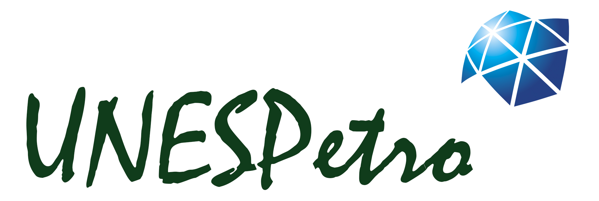

Horizonte selecionado: Topo do Embasamento Sísmico
Visualizador 3D das superfícies sísmicas interpretadas
Bacia de Santos – Porção centro-norte | Dissertação de Mestrado | Danielle Simeão Silverio Rocha

Bacia de Santos – Porção centro-norte | Dissertação de Mestrado | Danielle Simeão Silverio Rocha
